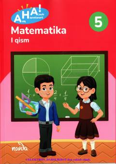

AM5-sinf o'quvchilari uchun mo'ljallangan zamonaviy matematika darsligi.
Ushbu darslik 5-sinf o'quvchilari uchun mo'ljallangan bo'lib, matematika fanini qiziqarli va tushunarli usullar bilan o'rgatishga qaratilgan. Kitobda natural sonlar va ular ustida to'rt amal mavzulari amaliy topshiriqlar hamda zamonaviy pedagogik yondashuvlar asosida yoritilgan.